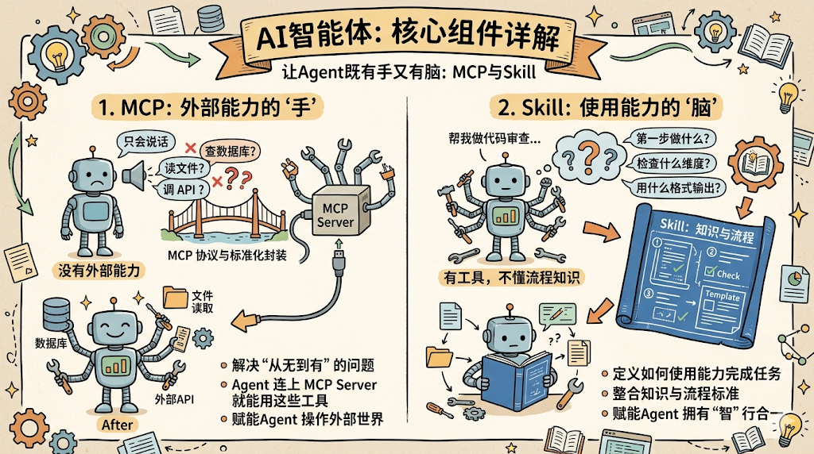
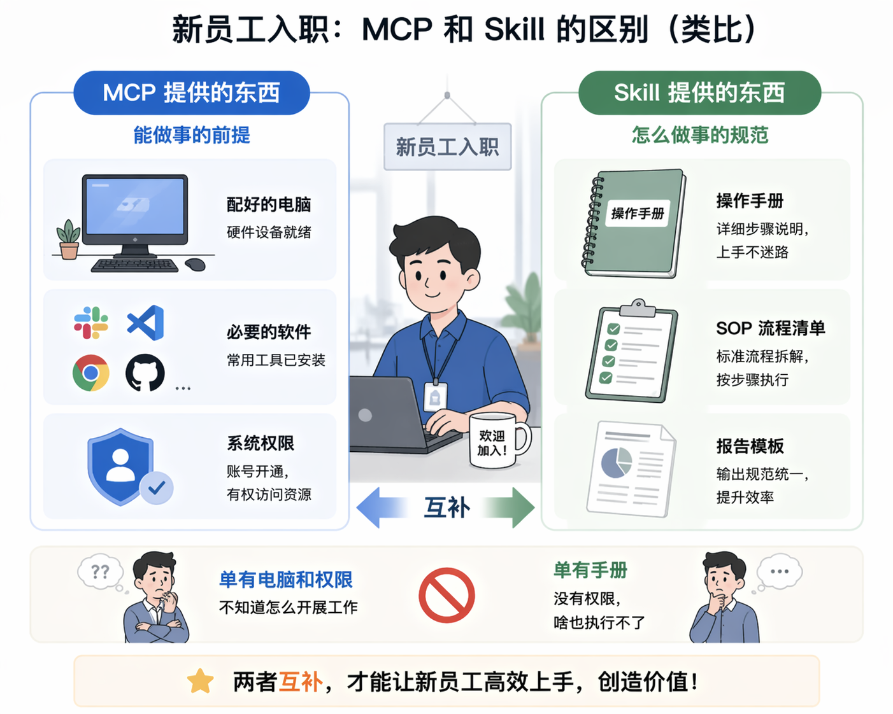
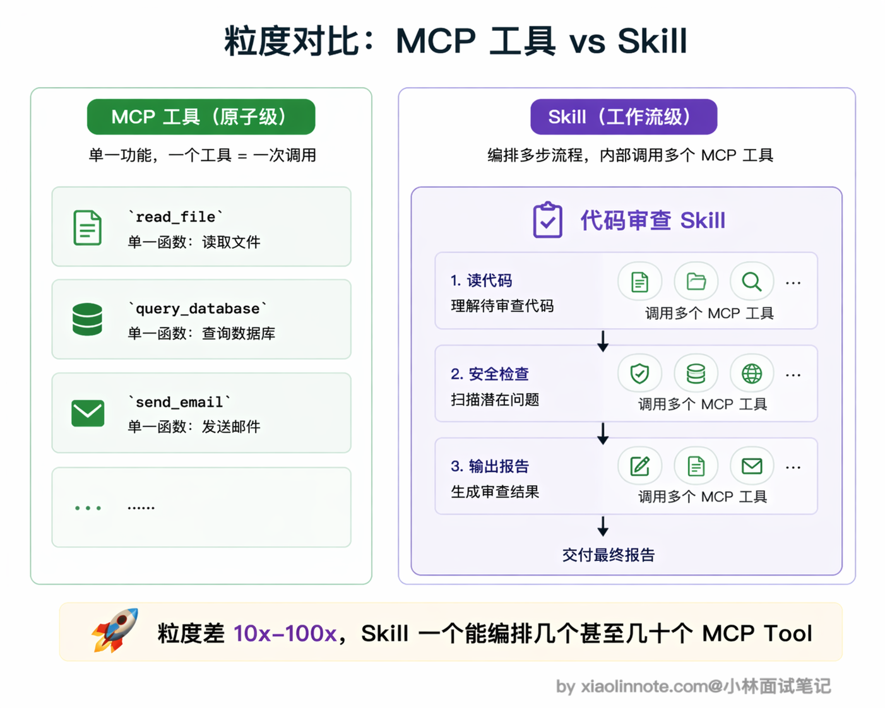
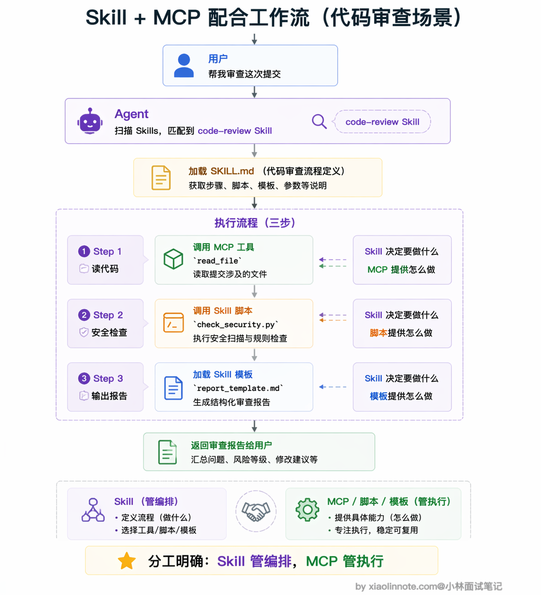
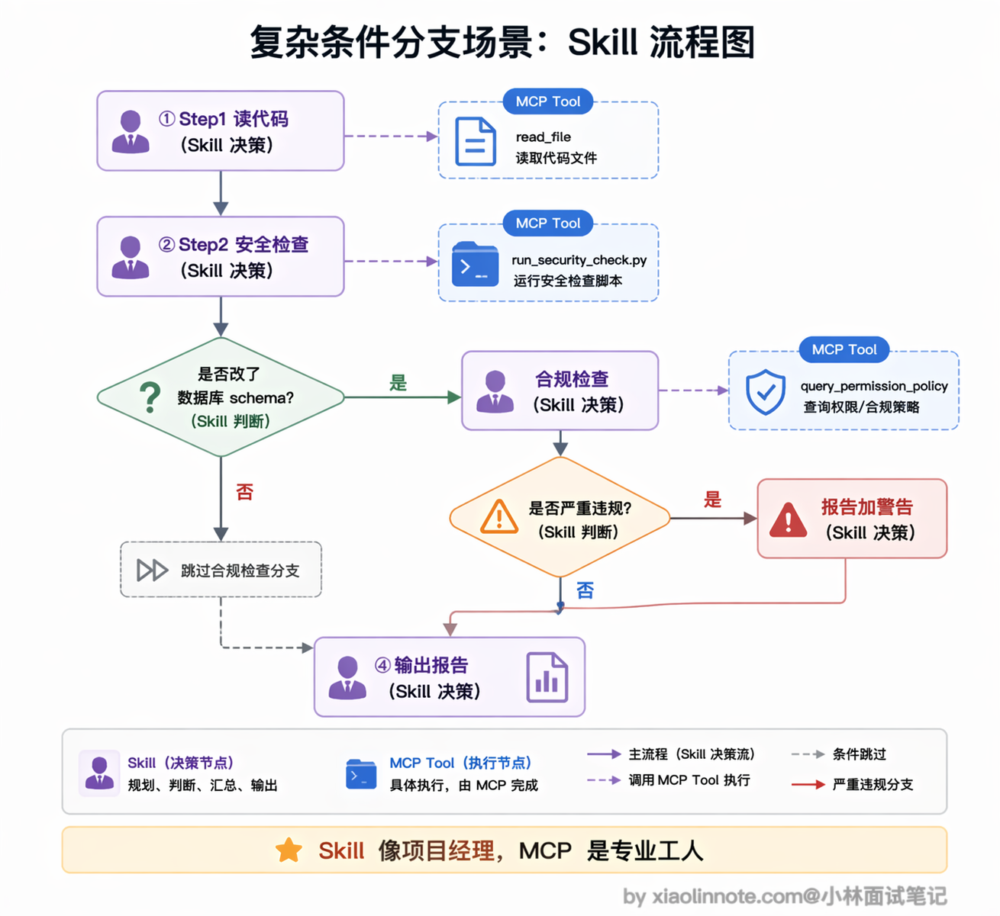

10. MCP 和 Agent Skill 的区别是什么？
👔面试官：MCP 和 Agent Skill 有什么区别？
🙋♂️我：它们都是给 Agent 加能力的吧？MCP 是用工具列表来描述 Agent 能做什么，Skill 也是描述 Agent 能做什么，本质上差不多，只是格式不同。
👔面试官：「本质上差不多」？那你觉得为什么要搞两套东西，一套不就够了？如果真的差不多，为什么 MCP 和 Skill 的结构、加载方式、使用场景完全不一样？
🙋♂️我：嗯……可能 Skill 就是一种更高级的 prompt 模板？把常用的指令保存下来，比 MCP 多了一些描述信息？
👔面试官：你又把 Skill 降格成「prompt 模板」了。Skill 可不只是一段指令文字，它是一个完整的文件夹，里面有指令、脚本、模板、参考文档，而且能被 Agent 自动发现和按需加载。MCP 给 Agent 提供的是工具和数据的访问能力，Skill 教 Agent 拿到这些工具之后该怎么用。一个是「能力」，一个是「知识和流程」，层次完全不同。你把这两者的定位和分工搞清楚。
好，这段对话的误区很典型，很多人把 MCP 和 Skill 当成同类概念。下面我把两者各自的定位和配合方式拆开讲清楚。
💡 简要回答
MCP 和 Agent Skill 不是同类概念，不是竞争关系，而是互补的。
MCP 解决的是「Agent 怎么获得外部能力」，它把数据库、API、文件系统这些外部工具标准化封装成服务，Agent 通过 MCP 就能查数据、调接口、读写文件。
Skill 解决的是「Agent 拿到这些能力之后，该按什么步骤、什么标准来完成任务」，它把完成某类工作的知识和流程打包成可复用的模块。
简单记：MCP 是给 Agent 配的电脑和软件，Skill 是给 Agent 发的操作手册和 SOP。在实际系统里，两者经常同时工作，Skill 定义流程，流程中调用 MCP 提供的工具。
📝 详细解析
从定位说起：两者解决的不是同一个问题
很多人第一次接触这两个概念会觉得它们都跟「Agent 能做什么」有关，但仔细一想会发现，两者的目的和工作层次完全不同。

MCP 解决的是「Agent 怎么获得外部能力」。没有 MCP 之前，Agent 就是一个只会说话的语言模型，你让它查数据库它查不了，让它读文件它读不了，让它调 API 它也调不了。MCP 把这些外部工具标准化封装成独立的服务，Agent 连上 MCP Server 就能用这些工具了。所以 MCP 解决的是「从无到有」的问题，让 Agent 有能力去操作外部世界。
Skill 解决的是另一类问题：「Agent 有了这些能力之后，该怎么用」。你想，Agent 现在能查数据库了、能读文件了、能调 API 了，但面对一个「帮我做代码审查」的任务，它该先做什么后做什么？检查哪些维度？用什么格式输出？这些「知识和流程」，就是 Skill 要提供的。
用一个类比就很好理解。MCP 就像给新员工配电脑、装软件、开各种系统权限，这些是他「能做事」的前提。但光有电脑和权限是不够的，你还得给他一份操作手册，告诉他做代码审查的时候先检查什么、后检查什么、用什么标准判断、最后用什么模板写报告。这份操作手册就是 Skill。

MCP：让 Agent 有「手」
理解了两者的定位差异，先来展开看看 MCP。为什么说它是 Agent 的「手」？因为如果没有 MCP，Agent 就只会「说话」，不会「做事」。
MCP Server 暴露的 Tools、Resources、Prompts 就是 Agent 操作外部世界的手段。模型通过 Function Calling 触发这些工具，工具执行完把结果喂回对话。MCP 的粒度是「原子操作」，read_file(path) 是一个 Tool，query_database(sql) 是一个 Tool，每次调用做一件明确完整的事，执行结果立刻返回。模型能看到每个 Tool 的完整 schema，包括它叫什么名字、接受什么参数、返回什么格式。这种精确的可见性正是模型能准确判断「这个问题该调哪个工具」的基础。
简单说，MCP 让 Agent 从「只会聊天」进化成了「能真正干活」，这是一切上层能力的前提。
Skill：给 Agent 一份「操作手册」
有了 MCP 之后，Agent 确实能查数据、调 API 了，但面对一个复杂任务，它怎么知道该按什么顺序用这些工具？该关注哪些维度？该用什么标准判断质量？这就是 Skill 要解决的问题。
Agent Skill 是 Anthropic 在 2025 年 10 月推出的概念，同年 12 月把规范作为开放标准发布，目标是让这套能力模块格式能在不同 Agent 平台之间通用。每个 Skill 是一个文件夹，核心是一份 SKILL.md 文件，用 YAML frontmatter 声明名字和描述，正文写具体的执行指令和步骤。除了指令文件，Skill 还可以带上脚本（比如一个安全检查的 Python 脚本）、参考文档（比如团队的审查标准）、模板（比如报告的输出格式）。这些东西打包在一起，就构成了一个完整的「操作手册」。
Skill 和普通 prompt 最大的区别在于两点。
- 第一，Skill 能被 Agent 自动发现。Agent 启动的时候会扫描可用的 Skill 列表，当用户提了一个任务，Agent 自己判断哪个 Skill 和这个任务相关，主动去加载，不需要你手动告诉它「用 code-review 这个 Skill」。
- 第二，Skill 用了一套「渐进式加载」的机制来节省 context window。启动时只加载每个 Skill 的名字和一句话描述，大概每个 Skill 只占 30 到 50 个 token；只有当 Agent 判断某个 Skill 和当前任务相关时，才会加载完整的指令正文；执行过程中需要用到模板或参考文档时，才会进一步加载这些资源文件。这样就避免了把所有 Skill 的内容一股脑塞进上下文，浪费宝贵的 context window 空间。
所以 Skill 的粒度比 MCP 工具粗得多。MCP 的粒度是单个函数调用，比如 read_file、query_database；Skill 的粒度是一个完整的工作流程，比如「代码审查」「数据分析报告」，内部可能涉及好几个步骤、调用好几个工具。

两者怎么配合工作
看到这里你可能会想，既然 MCP 提供工具、Skill 提供流程，那它们在实际系统里是怎么配合的？咱们用一个代码审查的场景走一遍就清楚了。
用户对 Agent 说「帮我审查一下这次提交的代码」。Agent 收到任务后，先扫描自己可用的 Skill 列表，发现有一个叫 code-review 的 Skill 和这个任务匹配度很高。于是 Agent 加载它的 SKILL.md 正文，读取里面的执行流程。这份 SKILL.md 长这个样子：
---
name: code-review
description: "对代码进行全面审查，识别 bug、安全漏洞和性能问题"
---
# 代码审查
## 第一步：读取待审查的代码文件
读取用户指定的代码文件，理解功能和修改范围。
## 第二步：执行安全检查
运行 scripts/check_security.py 对代码做自动化安全扫描。
## 第三步：输出审查报告
使用 assets/report_template.md 的模板格式，输出结构化审查报告。你看，SKILL.md 的作用就是告诉 Agent「做什么、按什么顺序做」，它就是一份操作手册。
但 Skill 只定义了流程，真正「动手」的时候还是得靠 MCP。Agent 执行第一步「读取代码文件」，需要调用文件系统 MCP Server 提供的工具：
# Skill 第一步说：读取待审查的代码文件
# Agent 发现 MCP 有 read_file 工具，于是调用它
code = mcp_client.call_tool("read_file", {
"path": "src/auth.py" # 要审查的文件路径
})执行第二步「安全检查」时，Agent 加载 Skill 自带的脚本 scripts/check_security.py 并执行。这就是 Skill 比普通 prompt 强的地方，它不只有文字指令，还能带可执行的脚本。
执行第三步「输出报告」时，Agent 加载 Skill 的 assets/report_template.md 模板，按照里面定义的格式把审查结果整理成结构化报告返回给用户。
整个流程的分工非常清晰：Skill 扮演「编排者」，定义了做什么、按什么顺序做、用什么标准做；MCP 扮演「执行者」，提供了每一步需要调用的具体工具。两者配合起来，Agent 才能既知道「该怎么做」，又有能力「真正去做」。

再看一个稍复杂的场景，你就能感觉到这种分工的威力。假设 Skill 定义的流程里有一步「如果改动涉及数据库表结构，额外执行权限合规检查」，这就是条件分支。
Agent 读到这条指令时，会先调用一个 MCP Tool 去扫描这次提交有没有改数据库 schema，拿到结果（布尔值）之后再决定要不要走那条分支；如果要走，就再调另一个 MCP Tool（比如 query_permission_policy）去查合规规则，最后根据结果决定审查报告里是否要加一条严重级警告。
整个过程里，Skill 就像项目经理，拿着流程图和判断标准指挥执行；MCP 提供的每个 Tool 就像专业工人，各自只管做好一件小事。
缺了 Skill，Agent 拿着一堆工具不知道该什么时候用；缺了 MCP，Skill 再详细的流程也只是纸上谈兵。

🎯 面试总结
回到开头对话踩的雷，最大的误区就是把 MCP 和 Skill 当成同类概念来对比。面试回答这道题，第一个必须说清楚的是两者的定位差异：MCP 提供工具和数据的访问能力，解决的是「Agent 怎么做事」；Skill 提供完成任务的知识和流程，解决的是「Agent 该怎么做事」。一个是能力，一个是知识。
第二个关键点是粒度差异。MCP 的粒度是原子操作，每次调用做一件明确的事，schema 对模型完全可见；Skill 的粒度是工作流程，定义的是完成某类任务的完整步骤和标准，还可以附带脚本、模板等资源，通过渐进式加载按需使用。
第三个加分点是讲清楚两者的配合方式。Skill 编排流程，MCP 提供工具，Skill 指令里经常会调用 MCP 的工具来完成具体操作。如果能用代码审查这样的完整场景把两者的配合串起来，面试官能看出你不只是背了概念，而是真正理解了它们在系统里怎么协作的。
对了，大模型面试题会在「公众号@小林面试笔记题」持续更新，林友们赶紧关注起来，别错过最新干货哦！